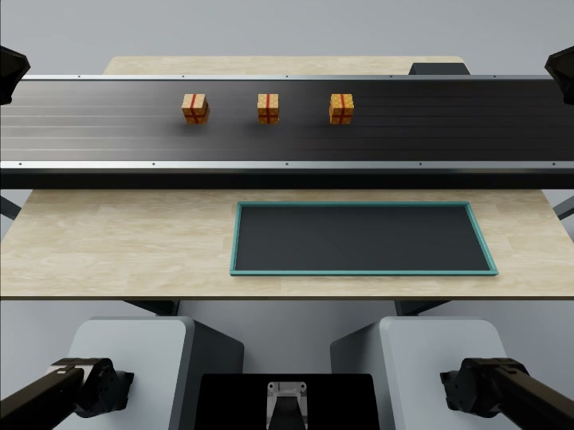
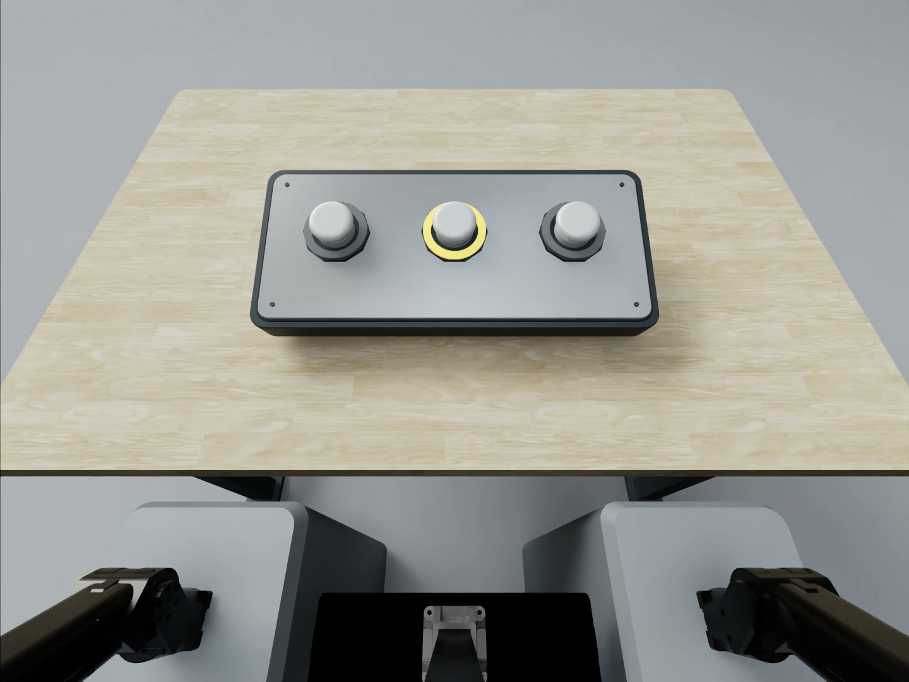
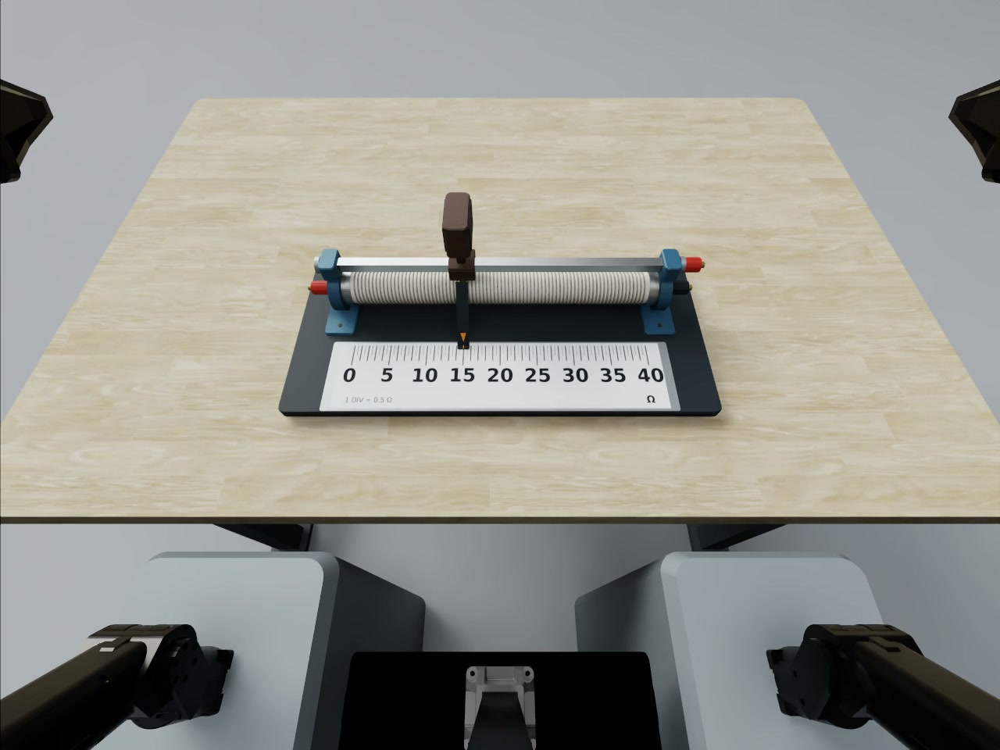
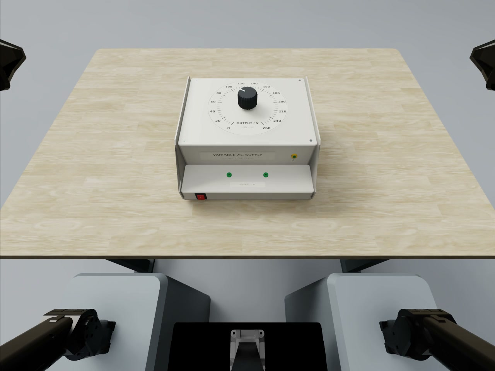
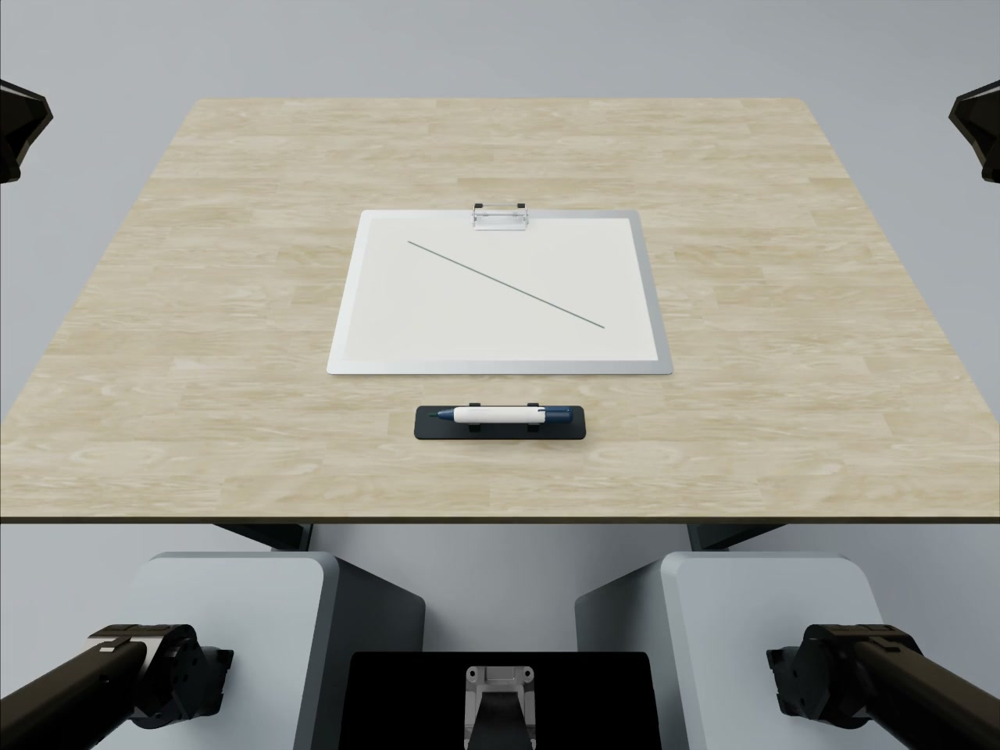

Continuous Conveyor Picking
Pick moving packages from a conveyor and place them in the collection tray.
View task
Physical execution
Respond to dynamic cues and execute precise, stable actions under physical constraints.
Can the robot turn the intended action into a valid physical outcome?

Pick moving packages from a conveyor and place them in the collection tray.
View task
Respond to illuminated button cues with timely, correct presses and releases.
View task
Adjust a linear resistor to the target reading and maintain it after release.
View task
Adjust a rotary voltage regulator to the target reading and maintain it after release.
View task
Grasp a marker and trace a visible path with controlled contact and precision.
View task